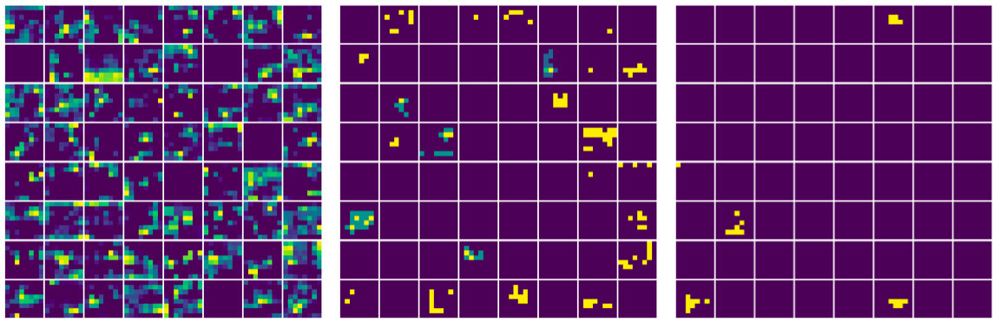
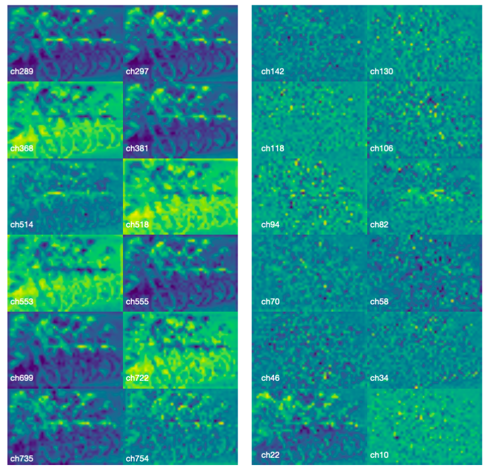

Noise as Masks
Representation Learning Final Project, 2022
We propose to use noise as masks for masked image modeling. While randomized patch masking
has
yielded decent results in self-supervised learning, it is not at all obvious that it is the
optimal
design. We show that theoretically inspired semantically-guided noise masks can be a
potentially
well-performing alternative.

Entropy Constrained Information Bottleneck
Sparse and Low-Dimensional Models for High-Dimensional Data Final
Project, 2022
We propose to use deterministic encoding along with actual quantization
on latents, rendering the IB problem a source compression. By doing so, finite non-trivial
mutual information can be estimated.

Black-box Adversarial Attacks with Style Information
E6691 Final Project, 2022
We propose two types of blackbox attacks based on style transfer and
investigate how robust classifiers behave against them.

Unsupervised Harmonic Sound Source Separation with Spectral
Clustering
Unsupervised Machine Learning Final Project, 2021
We modeled mixed sources of audio signals by sinusoidal modeling with Short-Time Fourier
Transforms. Based on selected spectral peaks of sinusoidal parameters, we constructed a
similarity function between time and frequency components, and applied spectral clustering
to globally partition the data.

Exploring Diverse Ways To Improve An Agent On Active Object
Localization With Deep Reinforcement Learning
E6885 Final Project, 2021
We proposed improvement to using DQNs for Object Detection from four aspects,
including using advanced CNNs to generate state representation, defining more flexible
action spaces, changing reward function to avoid undesired activity in agent
and using mask instead cross for multiple objects.

Design and Optimization of a Multi-scale Representation based Image
Compression Network
Undergraduate Thesis, 2021
Learned image compression has surpassed the rate-distortion performance of hand-crafted
traditional image codecs in recent years. However, they are not yet practical because of
their significantly slower decoding speed than classical algorithms. We investigated the
possibility of directly performing vision tasks in the latent space and found that using a
multi-scale encoder helped preserve semantic meaning in latent codes while maintaining
state-of-the-art compression rates.

Dynamic Disparity Range Semi-Global Matching for Video Stereo
Matching
Computer Vision Final Project, 2020
Implemented an accelerated stereo matching algorithm for video sequences, utilizing a
dynamic disparity range search based on temporal correlation between frames, saving 21% of
computational time with minimal accuracy loss. Designed a Divided Section cost function,
preserving more
information than Census cost, achieving 18% better matching accuracy while trading off
computational complexity.